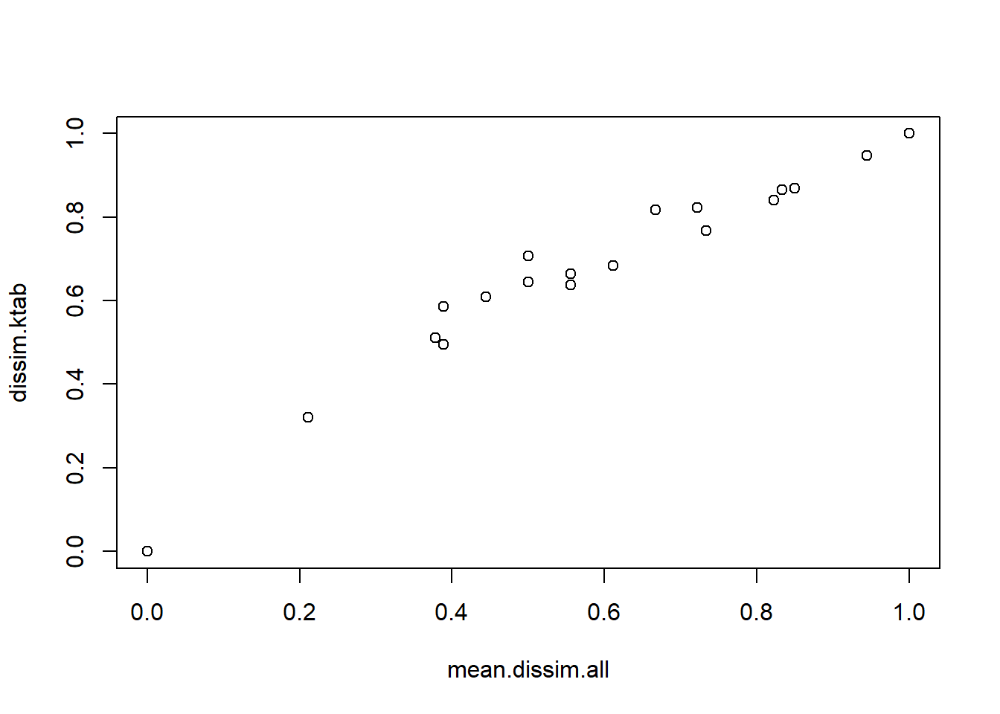

library(here)
library(tidyverse)
library(FD)
library(gawdis)
rm(list = ls())Analysis of Ecological Data
Trait dissimilarity
Technichal University of Munich, TUM School of Life Sciences, Chair of Restoration Ecology, Emil-Ramann-Straße 6, 85354 Freising, Germany
 https://orcid.org/0000-0001-5372-4174
https://orcid.org/0000-0001-5372-4174


This tutorial is based on Bello et al. (2021)
1 Preparation
1.1 Load libraries
The FD package is of Laliberté & Legendre (2010).
1.2 Load data
Let us create first some ‘species x traits’ matrix by hand, just for simplicity. This will include 3 traits, a quantitative trait such as body size (t1), a qualitative trait transformed into a binary code, for example if species are carnivorous or not (t2; 1=yes, 0=no) and a categorical trait with multiple levels (i.e. a factor with more than 2 levels), species color in the example (t3) using fuzzy coding (i.e. more columns are used to characterize a trait; see the reference book). We explain in more detail below, a bit better, the reasoning behind such fuzzy coding.
species_ammer <- read_csv(
here("data", "processed", "data_processed_species.csv"),
col_names = TRUE, col_types = cols(
.default = "?",
accepted_name = "f"
)
)
traits_ammer <- read_csv(
here("data", "processed", "data_processed_traits.csv"),
col_names = TRUE, col_types = cols(.default = "?")
)
traits_invented <- read_csv(
here("data", "processed", "data_processed_traits_invented.csv"),
col_names = TRUE, col_types = cols(.default = "?")
)2 Trait dissimilarity
2.1 Calculation of trait dissimilarity
2.1.1 Calculation by hand
Let’s now start by computing dissimilarity by hand, without using any existing function. We will do this for each trait separately, considering first the binary trait, e.g. carnivorous vs. not carnivorous species (1 and 0 respectively in trait carnivory in Fig. 3.3). The dissimilarity between two species is, in this case, simply given by whether the two species share the same carnivory level or not. For example, species 1 and 2 are both carnivorous so that the dissimilarity between them is zero. This can be computed simply as the difference of the trait value of species 1 (which is 1) and species 2 (also 1), as \(abs(1−1)=0\) (notice that we express this as absolute difference because dissimilarities cannot be negative). On the contrary species 1 and 3 are completely different in this trait, one is carnivorous and the other is not. In that case \(abs(1−0)=1\), which implies that the two species are 100% different between them. Following this, we can compute dissimilarity for all pairs of species using only carnivory. This can be done simply by considering the function dist. For example:
traits_invented %>%
select(carnivory) %>%
dist() 1 2 3 4 5 6
2 0
3 1 1
4 0 0 1
5 1 1 0 1
6 0 0 1 0 1
7 1 1 0 1 0 1For some functions we do need trait dissimilarity in such a “triangular” shaped data. For others (e.g. picante::mpd) we need to transform such a “triangular” object into a matrix, for example as:
traits_invented %>%
select(carnivory) %>%
dist() %>%
as.matrix() 1 2 3 4 5 6 7
1 0 0 1 0 1 0 1
2 0 0 1 0 1 0 1
3 1 1 0 1 0 1 0
4 0 0 1 0 1 0 1
5 1 1 0 1 0 1 0
6 0 0 1 0 1 0 1
7 1 1 0 1 0 1 0Following the examples above we can see that the trait dissimilarity is usually an object composed by either a triangle or by two specular/symmetric triangular matrices (such as in Fig. 3.3). Each of the triangles provides a dissimilarity value for each pair of species in a given dataset, and the two triangles contain the same information (most R functions need only the “triangle” type of data, i.e. class ‘dist’, others will need a quadrat, i.e. class ‘matrix’). Now notice that by coding the trait “carnivory” between 0 and 1 (i.e. no vs. yes), all the dissimilarities between species are constrained between 0 and 1, which quite conveniently indicates that species are either equal between them or completely different. It is important to notice that the diagonal of this object is, in most cases, assumed to be equal to zero. This is so because in most approaches the dissimilarity of one species with itself is considered to be equal to zero, meaning that a species is equal (i.e. not different) to itself. Ideally this could be improved, i.e. including dissimilarity between individuals within a species, but most algorithms do not consider this case.
Let us now consider a quantitative trait, body size. Intuitively, the dissimilarity between one student 1.80 m tall and another 1.70 m tall is 10 cm. Similarly, in the example of body size (following Fig. 3.3) the dissimilarity between species will be, to start with, simply the difference in their observed trait values. For example, between species 1 and 2 it will be \(abs(10−20)=10\); between species 1 and 3 \(abs(10−30)=20\), and so on. However, a question arises: are these values big or small? In other words: how can we compare these values of dissimilarity with results from another traits, for example on carnivory (which is expressed in relation to its maximum possible obtainable value, i.e. 1)? How can we compare this trait to another trait expressed in another unit, for example grams? To allow such comparisons all traits need to scaled to similar units. To do so, most often dissimilarities are expressed on a 0-1 scale, as with the case of “carnivory”, i.e. indicating the extreme cases of no difference (0) and maximum difference (1). To do this for quantitative traits we need to define what is the maximum possible dissimilarity. This can be done, for example as
traits_invented %>%
mutate(
max.bodysize = max(bodysize, na.rm = TRUE), #notice we have an NA to take into account
maxdis = bodysize / max.bodysize
) %>%
select(names, maxdis)# A tibble: 7 × 2
names maxdis
<chr> <dbl>
1 sp1 0.143
2 sp2 0.286
3 sp3 0.429
4 sp4 0.571
5 sp5 0.714
6 sp6 NA
7 sp7 1 Other approaches use the function scale in which the mean (center) of a quantitative trait is computed and the differences from such a mean are computed. The values are then standardized by the standard deviation of the trait. Of course you can apply this only to quantitative traits. Specifically a “center and standardization” is done for each column in a species x trait matrix, meaning that the mean of trait values (across all species) is subtracted from each trait value; then, the mean value equals 0 and becomes the “center”. Then, these centered values are rescaled by dividing by the standard deviation of the trait values. In our case it would be (both by hand and using the built-in function):
traits_invented %>%
mutate(
mean.bodysize = mean(bodysize, na.rm = TRUE),
sd.bodysize = sd(bodysize, na.rm = TRUE),
diff.bodysize = bodysize - mean.bodysize,
scale.bodysize = diff.bodysize / sd.bodysize
) %>%
select(names, scale.bodysize)# A tibble: 7 × 2
names scale.bodysize
<chr> <dbl>
1 sp1 -1.23
2 sp2 -0.772
3 sp3 -0.309
4 sp4 0.154
5 sp5 0.617
6 sp6 NA
7 sp7 1.54 traits_invented %>%
select(bodysize) %>%
scale(center = TRUE, scale = TRUE) #with the built-in function bodysize
[1,] -1.2344268
[2,] -0.7715167
[3,] -0.3086067
[4,] 0.1543033
[5,] 0.6172134
[6,] NA
[7,] 1.5430335
attr(,"scaled:center")
bodysize
36.66667
attr(,"scaled:scale")
bodysize
21.60247 The two approaches described above (standardization between 0 and 1 vs. scaling) are generally comparable. The advantage of the first is that it can be used, as we will see below, more easily to compare quantitative and categorical traits.
2.1.2 Calculation with function FD::gowdis
One of the most commonly used approaches to compute trait dissimilarity, the Gower distance (Botta-Dukát 2005), follows the first approach. It considers, for quantitative traits, the highest dissimilarity for a given trait in a dataset to standardize the traits. In our case the maximum difference in body sizes is given by the difference between the biggest and the smallest species, i.e. \(abs(70−10)=60\). Once we know the maximum dissimilarity, we can simply divide the dissimilarity between species, in their original scale, by such maximum dissimilarity value in the data set. For example the dissimilarity between species 1 and 2 would be \(abs(10−20)/60=0.17\), and between species 1 and 3 \(abs(10−30)/60=0.33\). By doing this, the maximum dissimilarity between species is now 1.
#Gower by hand
traits_invented %>%
select(bodysize) %>%
dist() /
traits_invented %>%
select(bodysize) %>%
dist() %>%
max(na.rm = TRUE) 1 2 3 4 5 6
2 0.1666667
3 0.3333333 0.1666667
4 0.5000000 0.3333333 0.1666667
5 0.6666667 0.5000000 0.3333333 0.1666667
6 NA NA NA NA NA
7 1.0000000 0.8333333 0.6666667 0.5000000 0.3333333 NANotice that we have here one species with a missing value, so that the dissimilarity between this species (sp6) and the rest of species cannot be computed at least for this trait. This is a problem as most functions that we will use to compute functional diversity cannot handle NAs. We will see below that this will not prevent us from computing the dissimilarity based on all traits together, if we have sufficient information for other traits.
Notice that scaling the dissimilarity between 0 and 1 is not only recommended to compare quantitative traits with other type of traits, but it makes some interpretations of dissimilarity easier and the computation of alpha and beta functional diversity more robust (Chapter 5). On the 0-1 scale, the Gower distance for quantitative traits represents how relatively different are two species compared to the maximum possible dissimilarity value. For example, the dissimilarity between species 1 and 3 = 0.33 in terms of body size, implies that species 1 and species 3 are 33% different of the possible maximum dissimilarity (which is 60 cm). This idea has a great advantage, meaning that we can compare traits between them, independently of the unit (e.g. meters vs. grams) because the dissimilarity of each trait would be standardized to its maximum value. Similarly, we can compare quantitative traits to other type of traits (between species 1 and 2 it is 0.17 for body size 1 for carnivory). Eventually it is possible to combine these two dissimilarities. Using Gower dissimilarity, this is simply expressed as an average of the two dissimilarities, using the arithmetic mean \((0.17+1)/2=0.58\) or the geometric mean (Euclidean distance; (Pavoine et al. 2009)) \(sqrt(0.172+12)=1.01\). For the Gower dissimilarity a useful built-in function, gowdis, is provided in the package FD and, by default it computes the arithmetic mean:
traits_invented %>%
select(bodysize, carnivory) %>% #combining 2 traits
FD::gowdis() 1 2 3 4 5 6
2 0.08333333
3 0.66666667 0.58333333
4 0.25000000 0.16666667 0.58333333
5 0.83333333 0.75000000 0.16666667 0.58333333
6 0.00000000 0.00000000 1.00000000 0.00000000 1.00000000
7 1.00000000 0.91666667 0.33333333 0.75000000 0.16666667 1.00000000By hand it would be:
(traits_invented %>%
select(carnivory) %>%
dist() +
traits_invented %>%
select(bodysize) %>%
dist() /
traits_invented %>%
select(bodysize) %>%
dist() %>%
max(na.rm = TRUE)) /
2 1 2 3 4 5 6
2 0.08333333
3 0.66666667 0.58333333
4 0.25000000 0.16666667 0.58333333
5 0.83333333 0.75000000 0.16666667 0.58333333
6 NA NA NA NA NA
7 1.00000000 0.91666667 0.33333333 0.75000000 0.16666667 NAThe only difference in these two approaches is that the gowdis function does not provide NAs. This is because instead of computing the mean dissimilarity across the two traits, for those species with NA, only the dissimilarity of traits without NAs are used (for sp6 only carnivory is used in gowdis). We will come back to this below and in other sections as well.
There is a newer function gawdis::gawdis which is an update of FD::gowdis
- Calculate multiple and single trait differences for your selected traits.
trait_meta <- GIFT::GIFT_traits_meta()You are asking for the latest stable version of GIFT which is 3.2.2.2 Categorical and fuzzy coded traits
Let us now consider the third trait we mentioned above and in Fig. 3.3 of the reference book, i.e. species color. How can we transform a trait with multiple, “unordered”, levels into a quantitative trait? Is red bigger than blue? Ordering a trait such as this one is a difficult task (i.e. what is bigger and smaller?). Maybe in this case we could use the concentration of some pigment to define the color, resulting in only one column to define the trait. But in most occasions we have trait information expressed over multiple levels in which it is difficult to determine what is smaller or bigger. For example, herbaceous plant species could be grasses, legumes and fobs (a concept which was used to design the Jena experiment in Germany). This cannot be treated only as one value, as each of these strategies is considered to be completely different from another. Food source is another example, as usually there are multiple levels (italians eat spaghetti, frenchies croissant, czech dumplings, spanish tortilla and so on). For this type of traits, we could have two solutions. One is to code the trait as a factor. For example, imagine a case with 10 species, each being a grass, or a legume or a forb:
cat.trait <- sample(c("grass", "legume", "forb"), 10, replace = TRUE)
cat.trait %>%
as.data.frame() %>%
FD::gowdis() 1 2 3 4 5 6 7 8 9
2 1
3 1 1
4 1 1 0
5 0 1 1 1
6 1 0 1 1 1
7 1 1 0 0 1 1
8 0 1 1 1 0 1 1
9 1 1 0 0 1 1 0 1
10 1 0 1 1 1 0 1 1 1This basically works as for the dissimilarity with a binary trait. If the species are into the same category, then dissimilarity is 0 and vice-versa, if the species are into different categories, then dissimilarity is 1. So we could treat this into a binary type of traits, but since we have three levels (grass, forb, legume) we would need 3 columns. This can be done, for example as:
cat.trait %>%
as.data.frame() %>%
ade4::acm.disjonctif() ..forb ..grass ..legume
1 1 0 0
2 0 0 1
3 0 1 0
4 0 1 0
5 1 0 0
6 0 0 1
7 0 1 0
8 1 0 0
9 0 1 0
10 0 0 1This function creates the so called dummy variables, where each level of a factor gets its own column. Notice that each species as a value 1 for one column and 0 for the others. So the sum across 3 columns, for a given species, is 1 (the rowsum will be equal to 1). BE CAREFUL, the function gowdis, does not need we perform this step by hand, so we gave give the trait information directly as the, for example, “df” object above. So that life is easy in this specific case.
On the other hand, the problem is when a species belongs simultaneously to different categories, for example in the (impossible) case that a species can be both a grass and a legume. But what if italians are not the only ones eating spaghetti and czech also eat spaghetti (even if with ketchup!)? The same can happen for the colors above, and for many categorical traits. What to do here? Ideally we can use the dummy variables with a fuzzy coding approach. For example, if the trait color has three main levels (red, blue, yellow, i.e. the three primary colors), then the trait can be summarized in the species x trait matrix by three columns, one for each color, called dummy variables. In the columns, we can then add 1 for a species if it belongs completely to one of the categories, out of the three in this case, in which the species belongs. For example, species 1 is red, so we will add 1 to the column referring to the red color and 0 to the other columns. For each row, the sum must equal to 1, because adding 1 into a column would reflect that the species is 100% having a given color (as species 1 is 100% red).
colors.fuzzy <- traits_invented %>%
select(names, red, yellow, blue) %>%
column_to_rownames("names")
colors.fuzzy red yellow blue
sp1 1.0 0.0 0.0
sp2 0.0 1.0 0.0
sp3 0.5 0.0 0.5
sp4 0.0 0.0 1.0
sp5 0.2 0.3 0.5
sp6 0.0 1.0 0.0
sp7 1.0 0.0 0.0colors.fuzzy %>%
mutate(rowsum = rowSums(.)) red yellow blue rowsum
sp1 1.0 0.0 0.0 1
sp2 0.0 1.0 0.0 1
sp3 0.5 0.0 0.5 1
sp4 0.0 0.0 1.0 1
sp5 0.2 0.3 0.5 1
sp6 0.0 1.0 0.0 1
sp7 1.0 0.0 0.0 1Using dummy variables, combined with fuzzy coding, makes it possible to account for some species having an intermediate value among the different levels of the traits (i.e. having values that ‘sit’ between the different predefined categories of the trait). For example, a species of orange color could be codified as half red and half yellow. We could then add 0.5 to the red column and 0.5 to the yellow one (i.e. the species is 50% red and 50% yellow, which produces orange). If the species is violet then it would be half blue and half red, as species 3 in the example above. These intermediate cases are actually quite frequent. This fuzzy coding approach can be also used for binary traits, for example some plant species are sometimes annual, sometimes perennial (or in the case of carnivory mentioned above, a species could be sometimes carnivorous and sometimes not, sort of part-time vegetarian). This can be solved by using one binary trait going from 0 to 1 but also considering intermediate values, like 0.5 for species that are equally in one form or the other. Imagine now a hypothetical species which is sometimes carnivorous and sometimes not, and assume we would code this species as 0.5 for the trait “carnivory”. Then, the dissimilarity of this species with purely carnivore or not carnivore species (either having 0 or 1 in carnivory), would be abs(1−0.5) or abs(0−0.5), i.e. 0.5. Such a potential value of 0.5 would imply that species are 50% dissimilar.
Let us now see how the dissimilarity should be computed when using dummy variables, with either fuzzy coding or not. First let us assume that yellow, red and blue are completely different colors, for simplicity. This is an assumption we follow implicitly by using dummy variables. Then dissimilarity between species 1 and 2 should be equal to 1 (see object colors.fuzzy above), because each species “belongs” to different categories of the trait (they are included as 1 into the red and into the yellow columns respectively, i.e. they are 100% red and 100% yellow, respectively). On the other hand, the distance between species 1 and species 3 should be 0.5 because species 3 is partially red (50%). Similarly, the dissimilarity between species 1 and species 5 it should be 0.8, because species 1 and 5 overlap only in 20% of the cases.
There are several possible ways to compute this type of distances in R, but this should be done very carefully. Most important, most users are not aware that applying the commonly used function gowdis to the species x trait called colors.fuzzy will not work well, as it will not return these expected dissimilarity values. The problem is that the function will not “understand” that the three columns referring to species color are actually reflecting the same trait information. So it will consider that each column as a trait and will compute an average of the dissimilarity across all columns in the species x trait matrix:
FD::gowdis(colors.fuzzy) sp1 sp2 sp3 sp4 sp5 sp6
sp2 0.6666667
sp3 0.3333333 0.6666667
sp4 0.6666667 0.6666667 0.3333333
sp5 0.5333333 0.4666667 0.2000000 0.3333333
sp6 0.6666667 0.0000000 0.6666667 0.6666667 0.4666667
sp7 0.0000000 0.6666667 0.3333333 0.6666667 0.5333333 0.6666667How to solve this? try this simple correction.
colors.fuzzy %>%
FD::gowdis() /
colors.fuzzy %>%
FD::gowdis() %>%
max() sp1 sp2 sp3 sp4 sp5 sp6
sp2 1.0
sp3 0.5 1.0
sp4 1.0 1.0 0.5
sp5 0.8 0.7 0.3 0.5
sp6 1.0 0.0 1.0 1.0 0.7
sp7 0.0 1.0 0.5 1.0 0.8 1.0You can see that, now, the maximum dissimilarity is 1, and it is precisely between species that do not share any value in a given column. This is what we want!
The main problem appears if we want to compute dissimilarity using the object traits_invented, created above, which includes the 3 traits created above (body size, carnivory and the 3 colors):
traits_invented# A tibble: 7 × 6
names bodysize carnivory red yellow blue
<chr> <dbl> <dbl> <dbl> <dbl> <dbl>
1 sp1 10 1 1 0 0
2 sp2 20 1 0 1 0
3 sp3 30 0 0.5 0 0.5
4 sp4 40 1 0 0 1
5 sp5 50 0 0.2 0.3 0.5
6 sp6 NA 1 0 1 0
7 sp7 70 0 1 0 0 When combining the 3 traits to compute a combined dissimilarity, the gowdis function will actually “think” that there are 5 traits. When doing the average across the dissimilarities for the single trait it will thus give 1/5 of the weight to each column. By doing this it will wrongly give a weight of 1/5 to the quantitative trait, while it should be 1/3 and give the trait color a weight of 3/5 instead of 1/3. A temptation would be to use the argument w in the function gowdis, but this would not solve the problem. Unfortunately, in this case it is not simply possible to use the option of changing manually the weight of the columns, or at least we are not aware of a clear method that would do this correctly.
Instead, in such cases you need to compute dissimilarities for single traits individually and then average these dissimilarities across the different traits. Notice that gowdis does not work on vectors, but needs a matrix, or data frame, as the object containing the traits:
dissim.bodysize <- traits_invented %>%
select(bodysize) %>%
as.matrix() %>%
FD::gowdis()
dissim.carnivory <- traits_invented %>%
select(carnivory) %>%
as.matrix() %>%
FD::gowdis()
dissim.colour <- colors.fuzzy %>%
FD::gowdis() /
colors.fuzzy %>%
FD::gowdis() %>%
max()
dall <-list(
as.matrix(dissim.bodysize),
as.matrix(dissim.carnivory),
as.matrix(dissim.colour)
)
mean.dissim.all <- as.dist(
apply(simplify2array(dall), c(1, 2), mean, na.rm = TRUE), 2
)
mean.dissim.all 1 2 3 4 5 6 7
1 0.0000000
2 0.3888889 0.0000000
3 0.6111111 0.7222222 0.0000000
4 0.5000000 0.4444444 0.5555556 0.0000000
5 0.8222222 0.7333333 0.2111111 0.5555556 0.0000000
6 0.5000000 0.0000000 1.0000000 0.5000000 0.8500000 0.0000000
7 0.6666667 0.9444444 0.3888889 0.8333333 0.3777778 1.0000000 0.0000000or, which is the same (but more difficult if there are many traits and NAs):
(dissim.bodysize + dissim.carnivory + dissim.colour) / 3 sp1 sp2 sp3 sp4 sp5 sp6
sp2 0.3888889
sp3 0.6111111 0.7222222
sp4 0.5000000 0.4444444 0.5555556
sp5 0.8222222 0.7333333 0.2111111 0.5555556
sp6 NA NA NA NA NA
sp7 0.6666667 0.9444444 0.3888889 0.8333333 0.3777778 NAmean.dissim.all 1 2 3 4 5 6 7
1 0.0000000
2 0.3888889 0.0000000
3 0.6111111 0.7222222 0.0000000
4 0.5000000 0.4444444 0.5555556 0.0000000
5 0.8222222 0.7333333 0.2111111 0.5555556 0.0000000
6 0.5000000 0.0000000 1.0000000 0.5000000 0.8500000 0.0000000
7 0.6666667 0.9444444 0.3888889 0.8333333 0.3777778 1.0000000 0.0000000we might also want to consider the function dist.ktab for this task (together with the associated functions prep.fuzzy and ktab.list.df). The function dist.ktab can combine different type of traits, including circular traits (like leaf angles, or flowering days etc). This is how it would work for the fuzzy trait colour created above:
colors.fuzzy2 <- traits_invented %>%
select(red, yellow, blue) %>%
ade4::prep.fuzzy(col.blocks = 3)
#this apparently complicated step is just to make sure that the fuzzy traits are
#considered as such: indeed, the argument col.blocks defines how many columns
#characterize this trait
list.colour <- colors.fuzzy2 %>%
list() %>%
ade4::ktab.list.df()
dis.colour.ktab <- ade4::dist.ktab(list.colour, type = "F")
dis.colour.ktab 1 2 3 4 5 6
2 1.0000000
3 0.5411961 1.0000000
4 1.0000000 1.0000000 0.5411961
5 0.8219228 0.7164745 0.4438974 0.4346181
6 1.0000000 0.0000000 1.0000000 1.0000000 0.7164745
7 0.0000000 1.0000000 0.5411961 1.0000000 0.8219228 1.0000000Now, when you look at these results you can notice that they do not correspond exactly to the object dissim.colour which we created above.
dissim.colour # the computation done above, by hand, for this trait sp1 sp2 sp3 sp4 sp5 sp6
sp2 1.0
sp3 0.5 1.0
sp4 1.0 1.0 0.5
sp5 0.8 0.7 0.3 0.5
sp6 1.0 0.0 1.0 1.0 0.7
sp7 0.0 1.0 0.5 1.0 0.8 1.0The differences are small, but not negligible. To the best of our understanding, which can be of course limited, we are not sure why dis.colour.ktab is not exactly as dissim.colour which, we understand, should be the preferred result. If we accept that the function dist.ktab provides the intended results (which we are not sure of) then we can also combine the trait colour with the other two traits in traits_invented as:
list.traits <- list(
traits_invented %>% select(bodysize, carnivory),
colors.fuzzy2
) %>%
ade4::ktab.list.df()
dissim.ktab <- list.traits %>%
ade4::dist.ktab(c("Q", "F"))
plot(mean.dissim.all, dissim.ktab)
This shows that the results are different from what we hoped for. Alternatively, you can apply the function trova (de Bello et al. 2013) which can deal with this type of traits, and also circular traits and intraspecific trait variability. We will work with this function, and see how to use it below and in the R material connected to Chapter 6. See also R material 3: gawdis for a function which solves the problem with uneven trait contribution and can also handle fuzzy coded traits.
2.3 Missing values (NAs)
As already shown above, an important issue with the computation of trait dissimilarity is the case of missing trait values. In the case above of the matrix traits_invented, for the quantitative trait the dissimilarity between species 6 and the other species cannot be computed (i.e. NA). The good news is that dissimilarity can be still computed considering other traits when, and only when, there is at least one trait value available for species 6 (and the species to which species 6 is compared to). The resulting dissimilarity combining traits for species 6 is simply the average of the dissimilarity for those traits without NA. In case of the example above this would correspond to the average between dissimilarity for carnivory and for color only, excluding body size (because of the NA). Then, we can still use the dissimilarity resulting from other traits and discard, for the comparisons with species 6, the missing information about body size. For example, the distance between species 1 and 6 would consider both color and carnivory, i.e. 0.5, since dissimilarity based on carnivory is equal to 0 and dissimilarity based on color is equal to 1, and so on. We will deal with the cases of filling NA values in another exercise related to Chapter 6.